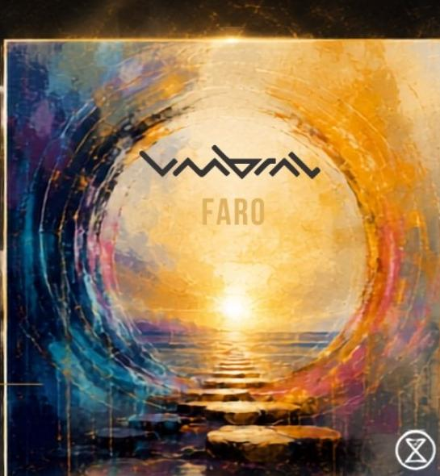
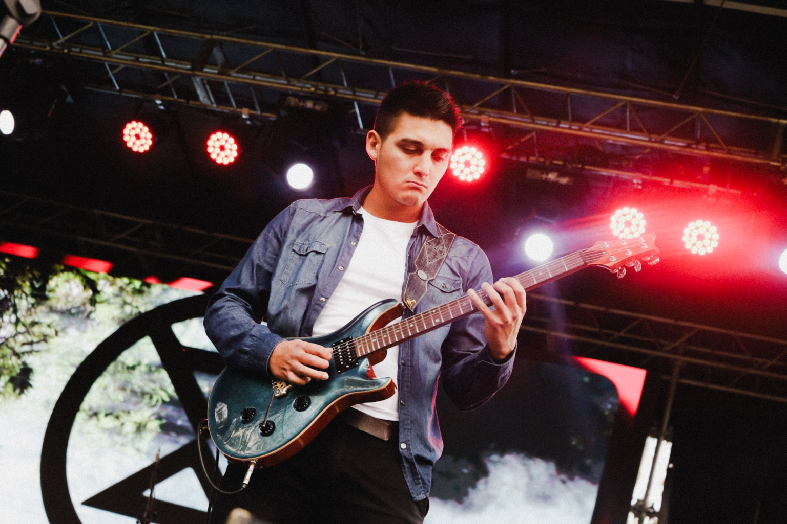
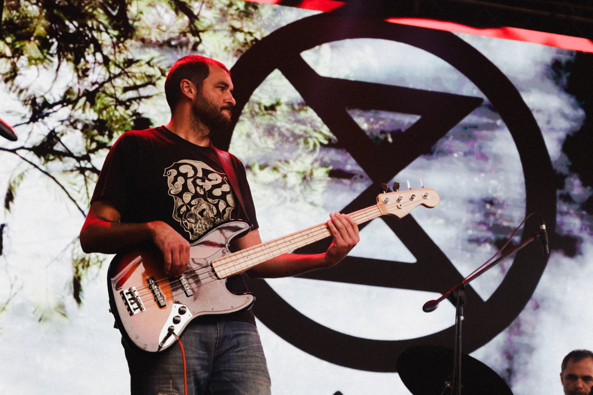
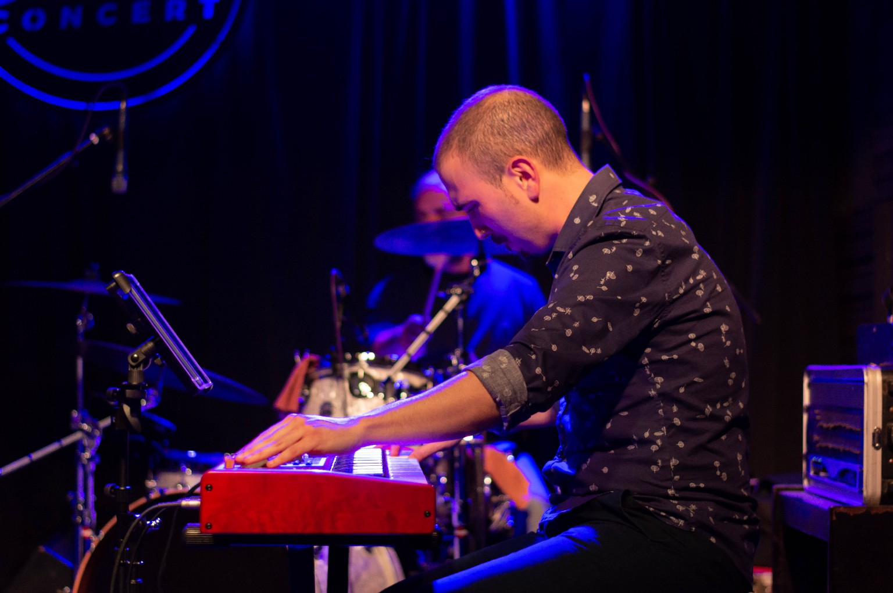
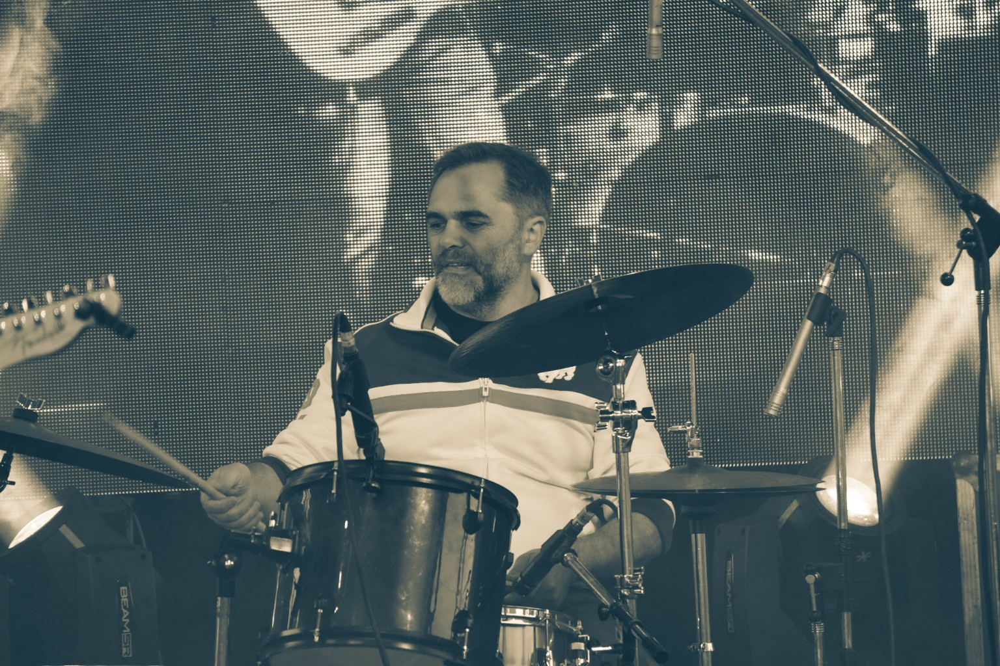
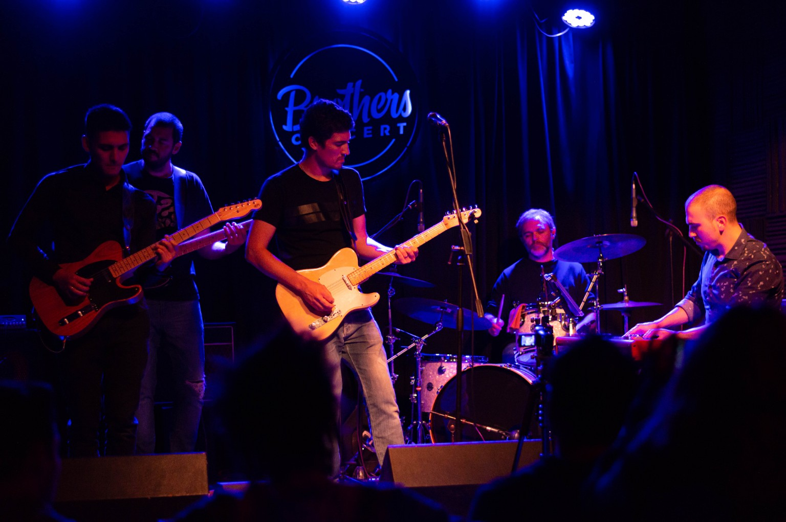
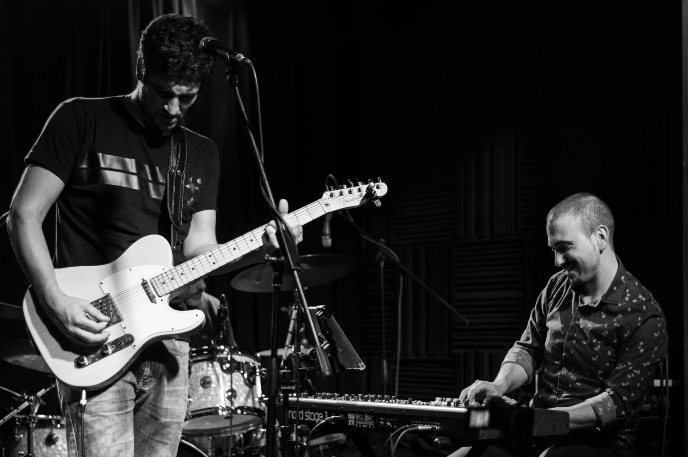

FARO de un nuevo comienzo: mirar hacia adelante, encontrar nuestra propia luz y seguir haciendo camino.
Lista del show
Galería Umbral







FARO de un nuevo comienzo: mirar hacia adelante, encontrar nuestra propia luz y seguir haciendo camino.





